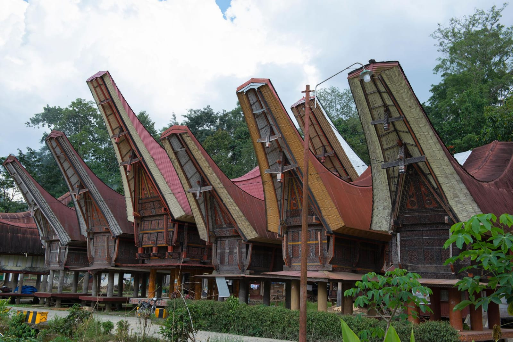
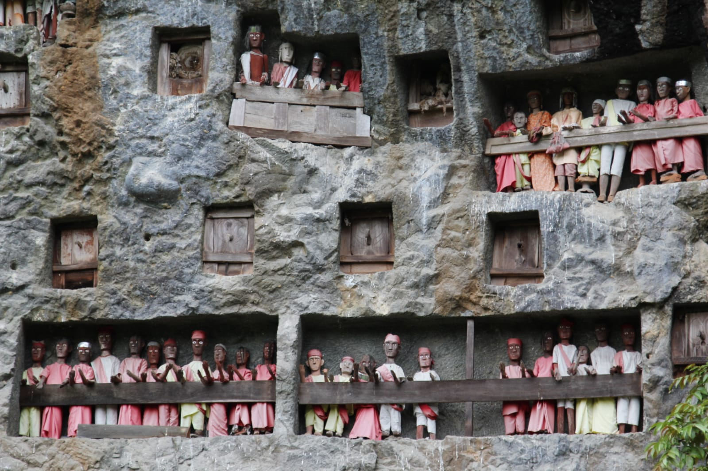

UNESCO World Heritage
Daftar situs warisan dunia yang diakui secara internasional di Toraja:

Desa Kete Kesu
Pmukiman tradisional dengan deretan rumah Tongkonan yang sudah berusia ratusan tahun.

Situs Londa
Situs pemakaman gua alam yang sangat sakral dan menunjukkan sosial budaya Toraja.

Situs Pallawa
Kompleks rumah adat tertua dengan dekorasi tanduk kerbau yang melambangkan kejayaan keluarga.